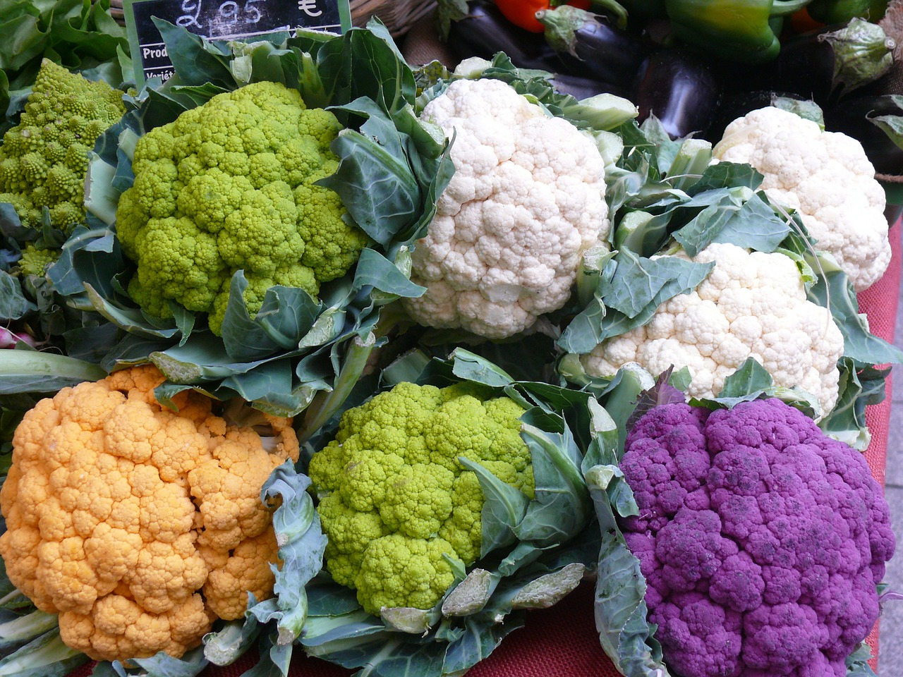

Home
Cauliflower Salad

Description
This cauliflower vinaigrette takes roasted or steamed cauliflower and tosses them in a tangy vinaigrette dressing. The vinaigrette is made with olive oil, vinegar, mustard, and seasonings. The cauliflower absorbs the dressing, adding a bright, acidic contrast to its mild, slightly nutty flavor. It can be served warm or cold, often as a side dish or salad.
Ingredients
- 1 large shallot minced
- Several cloves of garlic minced
- 1 teaspoon Dijon mustard
- 1/3 cup of sherry vinegar
- 1/2 cup of olive oil
- 2 heads of cauliflower chopped
- Handful of dried cranberries or craisins
Steps
- If desired, add cauliflower to a baking sheet and roast at 350F or until tender
- Whisk together shallot, garlic, mustard, and sherry vinegar.
- Slowly add olive oil while continuously whisking
- Add salt and pepper to taste
- Combine with the cauliflower